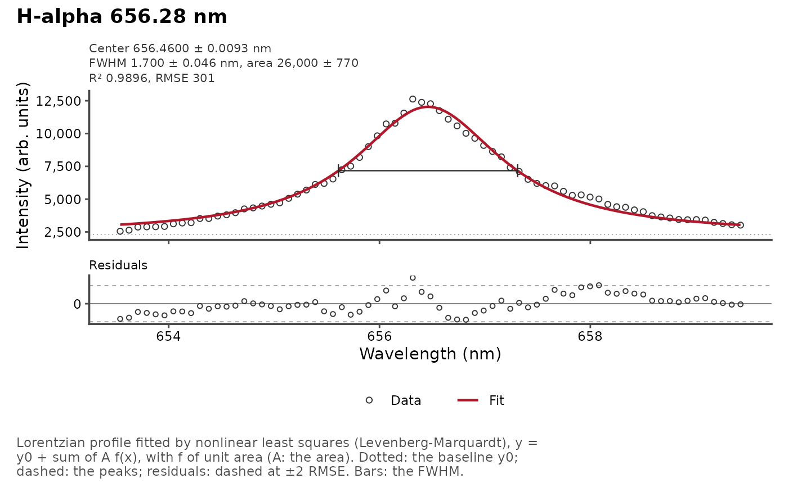
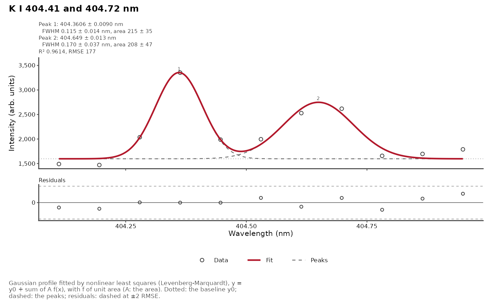

Plots the data and the fitted lineshape returned by peak_fit() or
multipeak_fit(), together with the residuals, and the fitted parameters
of each peak.
Usage
plot_fit(
data,
title = NULL,
annotate = TRUE,
show_fwhm = FALSE,
ncol = NULL,
xlab = "Wavelength (nm)",
ylab = "Intensity (arb. units)",
caption = TRUE,
base_size = 11,
point_size = 1.5,
point_color = "grey20",
line_width = 0.8,
fit_color = "#b2182b",
pt.size = deprecated(),
pt.colour = deprecated(),
pt.shape = deprecated(),
pt.fill = deprecated(),
line.size = deprecated(),
line.colour = deprecated(),
linetype = deprecated(),
resid.shape = deprecated(),
resid.size = deprecated(),
resid.fill = deprecated(),
resid.colour = deprecated()
)Arguments
- data
The output of
peak_fit()ormultipeak_fit().- title
The plot title. A long title is split into a title and a subtitle.
- annotate
A logical: write the fitted parameters and the quality of the fit above each panel (
TRUE, default).- show_fwhm
A logical: draw the FWHM of each peak as a bar at its half maximum (
FALSE, default).- ncol
The number of spectra per row. Default is up to 2.
- xlab, ylab
The axis titles. Default are
"Wavelength (nm)"and"Intensity (arb. units)". The unit in the parentheses ofxlabis that of the center and FWHM in the annotations.- caption
TRUE(default), a caption naming the profiles and the lines drawn;FALSE, no caption; or a caption of your own.- base_size
The size of the text, in points. Default is 11; use the text size of the journal (often 7 to 9 points) for a figure saved at its printed size.
- point_size
The size of the data points (default 1.5).
- point_color
The color of the data points (default
"grey20").- line_width
The width of the fitted curve (default 0.8).
- fit_color
The color of the fitted curve (default
"#b2182b").- pt.size, pt.colour, pt.shape, pt.fill, line.size, line.colour, linetype, resid.shape, resid.size, resid.fill, resid.colour
![[Deprecated]](figures/lifecycle-deprecated.svg) Use
Use point_size,point_color,line_widthandfit_color; the other styles are fixed.
Details
The fitted curve is drawn on a fine wavelength grid, so it shows the fitted profile between the measured channels. For multi-peak fits, the individual peak contributions are drawn as dashed lines, numbered at their maximum. The dotted line is the fitted baseline \(y_0\).
Parameters. With annotate = TRUE, the top of each panel gives, for
each peak, its center, full width at half maximum (FWHM) and area, with
their standard errors, and the quality of the fit: \(R^2\) and the root mean
square error (RMSE, the residual standard error). The model is
\(y = y_0 + \sum_j A_j f_j(x)\), with \(f_j\) of unit area, so that
\(A_j\) is the area of peak \(j\). The FWHM is wG (Gaussian), wL
(Lorentzian), or for a Voigt or pseudo-Voigt profile the FWHM of the
profile from both (Olivero and Longbothum, 1977, see voigt_fwhm()), its
standard error propagated from the covariance of the estimates. With
show_fwhm = TRUE, the FWHM of each peak is drawn as a bar at its half
maximum. The estimates are rounded to two significant digits of their
standard errors; all of them are in the tidied column of the fit.
Residuals. The lower panel gives the residuals, with dashed lines at plus and minus twice the RMSE: a structure in the residuals, beyond these lines or along the wavelength, shows a profile that does not fit the line (such as an asymmetric or self-absorbed line).
When several spectra were fitted, each gets its own fit and residual
panels, ncol per row.
References
Olivero, J.J., Longbothum, R.L. (1977). Empirical fits to the Voigt line width: A brief review. Journal of Quantitative Spectroscopy and Radiative Transfer, 17(2):233-236.
Examples
data(forageLIBS)
mean_spectrum <- colMeans(forageLIBS[-(1:14)])
wl <- as.numeric(names(mean_spectrum))
# the Stark-broadened H-alpha line, with its FWHM
halpha <- tibble::as_tibble(as.list(mean_spectrum[wl > 653.5 & wl < 659.5]))
plot_fit(peak_fit(halpha, profile = "lorentzian"), title = "H-alpha 656.28 nm",
show_fwhm = TRUE)

# the K I doublet: two Gaussian peaks, for a journal column
doublet <- tibble::as_tibble(as.list(mean_spectrum[wl > 404.1 & wl < 405.0]))
plot_fit(multipeak_fit(doublet, peaks = c(404.414, 404.721), profiles = "gaussian"),
title = "K I 404.41 and 404.72 nm", base_size = 8)
